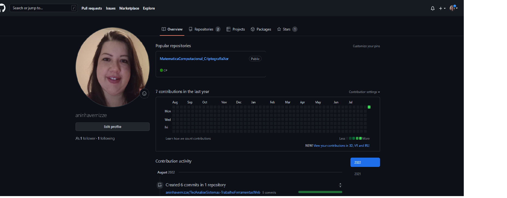

Meu portifólio ainda está pequeno, mas poderá ver meu GitHub
Ainda não tenho muito conteúdo, mas estou consdtruindo conforme vou evoluindo.
Tenho além desse projeto, e também o repositório do trabalho de Matemática Computacional realizado para a faculdade, onde desenvolvi o jogo da velha. Caso tenha interesse poderá baixar !!
